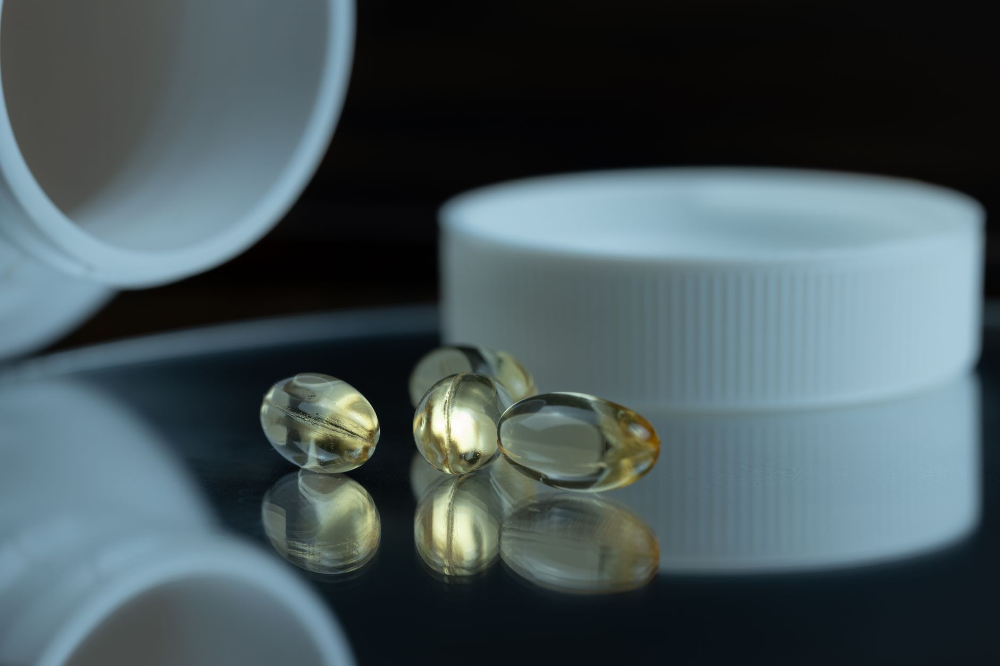

Silver tarnish isn't random. It's a specific chemical reaction: hydrogen sulfide gas in ordinary air reacts with the silver surface to form silver sulfide (Ag₂S), the brown-to-black compound you see on old coins and neglected bullion. According to the American Numismatic Association's preservation guidelines, even trace concentrations of airborne sulfur compounds, as low as a few parts per billion, are enough to start the reaction given enough time and humidity. The good news is that the reaction is entirely preventable with the right storage setup.
This guide covers the chemistry, the materials to avoid, and the layered protection system that keeps silver clean for years. For context on where to physically store your silver, see how home safes, bank safe deposit boxes, and third-party vaults compare for silver storage. For insurance coverage on stored silver, see how homeowner's insurance handles precious metals.
Why Silver Tarnishes and What You're Actually Fighting
Silver sulfide forms when hydrogen sulfide (H₂S) or sulfur dioxide (SO₂) in the air contacts silver metal in the presence of moisture. The reaction accelerates sharply above 50% relative humidity, according to the Smithsonian Institution's metal conservation standards. Below 40% relative humidity, the reaction slows dramatically. Below 30%, it nearly stops. This is why climate-controlled vaults and properly sealed containers are so effective: they attack both variables at once.
Fine silver (.999 purity) tarnishes more slowly than sterling silver (.925) because sterling's 7.5% copper content provides additional reaction sites. But .999 silver will still tarnish given enough time, sulfur, and humidity. American Silver Eagles, Canadian Maples, and standard 1-ounce rounds are all .999 fine and will all tarnish without protection.
The first line of defense isn't a product. It's isolation. Anything that separates the silver surface from ambient air reduces tarnish rate. An airtight capsule alone, even with no anti-tarnish chemistry inside, slows tarnish significantly simply by limiting the air volume in contact with the metal.

Materials to Never Store Silver With
According to the Coin Conservation Laboratory's material testing data, several common storage materials actively accelerate silver tarnish by releasing sulfur compounds, acids, or chlorides into the storage environment. The worst offenders are things many collectors use out of habit.
-
1
Rubber bands and rubber linings. Natural rubber contains sulfur as a vulcanizing agent. Direct contact with rubber causes fast, deep tarnish, often within hours. Even brief contact leaves permanent marks. Any container with rubber gaskets should be treated with caution.
-
2
Newspaper and kraft paper. Both off-gas sulfur compounds from the ink and processing chemicals. Wrapping coins in newspaper is one of the fastest ways to accelerate tarnish. Use acid-free, sulfur-free tissue (Krystaline or similar archival tissue) if you need a soft wrap.
-
3
Cardboard boxes (non-archival). Standard cardboard contains sulfur compounds and off-gasses in humid environments. Use only archival-grade, acid-free cardboard boxes or plastic containers if you store loose coins.
-
4
Wood drawers and cases. Oak and many other woods emit acetic acid and sulfur compounds. Wood cabinets designed for coin display are particularly problematic. If you use a wood cabinet, line it with Pacific Silvercloth and include anti-tarnish strips in each drawer.
-
5
PVC plastic (soft, flexible). PVC coin flips and soft plastic holders contain plasticizers that migrate onto coin surfaces over time and can cause a green, sticky residue called "PVC damage." Use Mylar (polyester) flips instead. Hard PVC (rigid) is generally safe.
Anti-Tarnish Strips: The Cheapest Layer That Works
In 2024, 3M's anti-tarnish strips (Pacific Silvercloth technology) remained the standard choice for enclosed silver storage, absorbing sulfur dioxide and hydrogen sulfide from the enclosed air volume. Each strip is rated for a sealed container environment for 6 to 12 months depending on sulfur concentration and how often the container is opened, according to 3M's product documentation.
Anti-tarnish strips work by adsorption: the strip material chemically binds sulfur compounds before they can reach the silver surface. They're not a barrier. They're a chemical sink. Once the strip is saturated, it stops working. Check strips annually. Replace them when they show any discoloration, which signals saturation.
Pacific Silvercloth fabric works on the same principle. It contains actual silver particles woven into the fabric, which preferentially absorb sulfur compounds. A drawer lined with Pacific Silvercloth creates a sustained protective environment without requiring individual capsules per coin. It's particularly practical for loose bullion rounds stored in quantity.
VCI Capsules and Airtight Containers: The Next Level
VCI stands for Volatile Corrosion Inhibitor. VCI-based storage products release a chemical vapor that deposits an invisible protective layer on metal surfaces, inhibiting the electrochemical reactions that cause tarnish. According to Cortec Corporation's technical data on silver-specific VCI products, VCI emitters can maintain protection in enclosed spaces for 12 to 24 months before requiring replacement.
For individual coins, AirTite brand hard plastic capsules in the correct diameter are the simplest airtight solution. They create a sealed microenvironment around each coin and protect against physical scratches simultaneously. Adding a small 3M anti-tarnish insert inside the capsule gives you both the mechanical seal and the chemical absorption in one unit.
For bulk storage of rounds and bars, larger airtight containers (Pelican cases, sealed ammunition cans with silica gel desiccant inside) work well. The key is the combination: airtight seal to limit air exchange, silica gel to control humidity within the sealed volume, and anti-tarnish material to absorb any residual sulfur compounds inside that air volume.
Temperature, Humidity, and the 50% Rule
Relative humidity below 50% is the target for silver storage, per the American Numismatic Association's storage guidelines. Above 60%, tarnish rates accelerate sharply. Above 70%, you add the risk of oxidation and spotting beyond tarnish alone. Temperature matters less than humidity, but large temperature swings cause condensation, which temporarily drives local humidity to 100% on the metal surface even when ambient humidity is controlled.
A single silica gel canister rated for the volume of your storage container will hold humidity in range for 6 to 12 months between rechargings. Color-indicating silica gel (turns pink when saturated) removes the guesswork. Recharge by baking at 250°F for two hours. One rechargeable silica gel canister, an airtight container, and a strip of anti-tarnish paper costs under $20 total and outperforms any dedicated "silver storage product" at ten times the price.
If you store silver in a home safe, check the humidity inside the safe independently. Many fire-rated safes trap moisture inside the insulation layer, creating a high-humidity environment even when the room humidity is controlled. A small digital hygrometer placed inside the safe confirms whether your anti-tarnish setup is working.

Frequently Asked Questions
Read next: The complete guide to storing silver at home
Sources
- American Numismatic Association, Coin Preservation and Storage Guidelines, retrieved 2026-06-08, money.org
- Smithsonian Institution, Metal Conservation: Preventing Tarnish and Corrosion, retrieved 2026-06-08, si.edu/mci
- 3M, Anti-Tarnish Strip Product Documentation, retrieved 2026-06-08, 3m.com
- Cortec Corporation, VCI Technology for Silver and Precious Metals, retrieved 2026-06-08, cortecvci.com
- Coin Conservation Laboratory, Material Exposure and Tarnish Rate Testing, retrieved 2026-06-08, pcgs.com/conservation